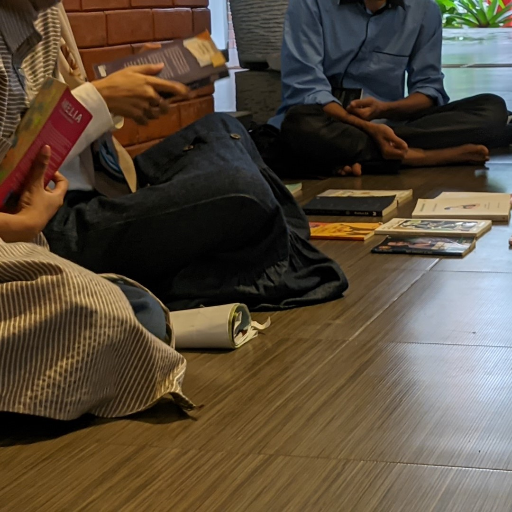
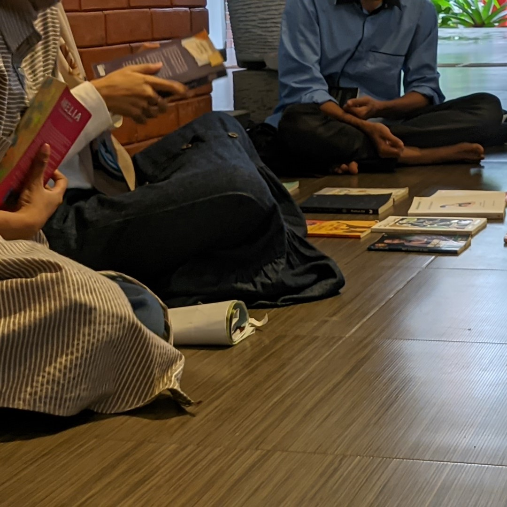

Good friends, good books, and a sleepy conscience: this is the ideal life.― Mark Twain
Siapa sih kita?
Thinkerbooks adalah sebuah komunitas buku penggerak literasi yang ada di Ciputat, Tangerang Selatan. Dibangun untuk membumikan membaca dan menjadi tangan penyalur buku untuk masyarakat sekitar.
About Us

 


Hanca buku adalah sebuah kegiatan membaca buku secara bersama dengan ssenyap dan dilanjutkan sharing bersama mengenai buku yang telah di baca.
Bertujuan untuk membumikan budaya membaca di kalangan pelajar, terkhusus mahasiswa-mahasiswi UIN Jakarta. Namun, thinkerbook tetap terbuka bagi kalangan umum yang ingin datang membaca bersama ^_^
Hanca buku, biasanya dilaksanakan setiap hari Selasa di halaman Fakultas Ilmu Sosial dan Politik (FISIP). Tidak hanya di fakultas itu saja, Thinkerbooks mencoba untuk membumikan di semua fakultas yang ada di UIN Jakarta. Artinya, setiap kegiatan akan dilaksanakan di fakultas yang berbeda setiap pekannya, dengan catatan, tidak ada kendala.
Book From Heaven adalah salah satu program Thinkerbooks berupa kegiatan mendonasikan buku kepada suatu yayasan untuk membumikan baca. Program ini diinisiasi sebagai bentuk surga yang turun bagi semua orang dengan bentuk pemberian buku.
Book From Heaven diadakan 3 bulan sekali, dengan target pemberian 100+ donasi buku kepada yayasan yang membutuhkan. Disamping itu, Thinkerbooks juga menyajikan agenda seru lainnya untuk meramaikan dan memeriahkan surga buku yang hadir dan akan membersamai teman-teman pembaca nantinya!